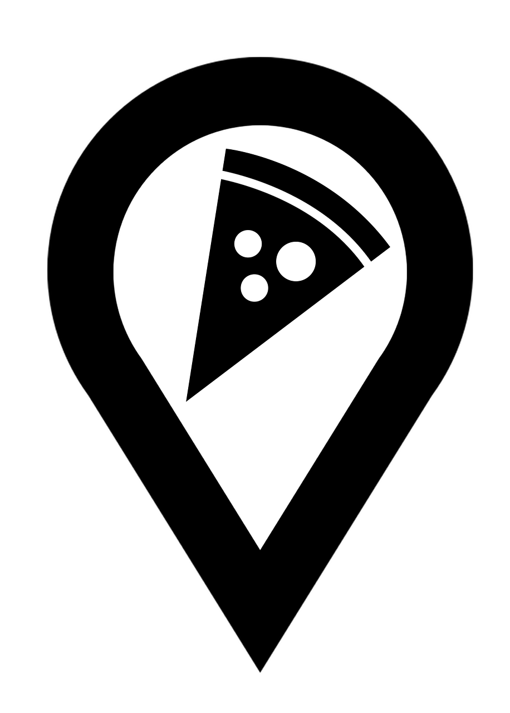

In the sun-drenched hills of Naples, Italy, a baker named Antonio Ricci discovered an ancient pizza dough recipe from his great-grandfather. Antonio, known for his exquisite bread, decided to try the dough for a new pizza. The result was a crust so light and crispy that it captivated everyone who tried it. His small bakery quickly became renowned for its exceptional pizza, and he named it ”Crust Bite Pizza” after moving to the Americas in 1924. The pizzeria grew famous across America and eventually around the world, with the Ricci family maintaining their dedication to the perfect crust in every slice they serve. Today, Crust Bite Pizza remains a beloved symbol of Italian-originated pizza mastery.
